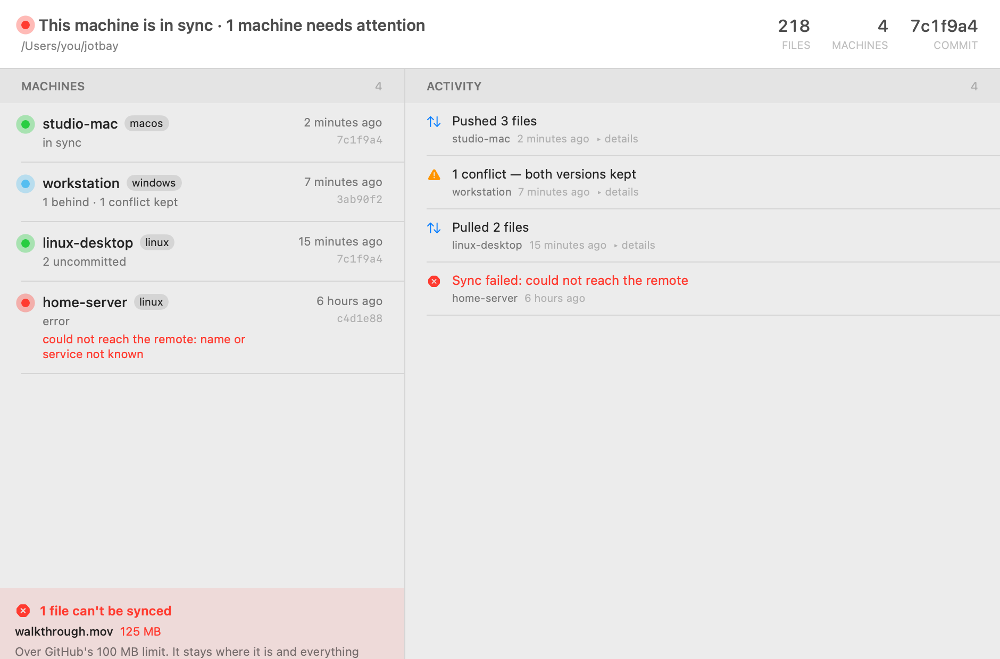
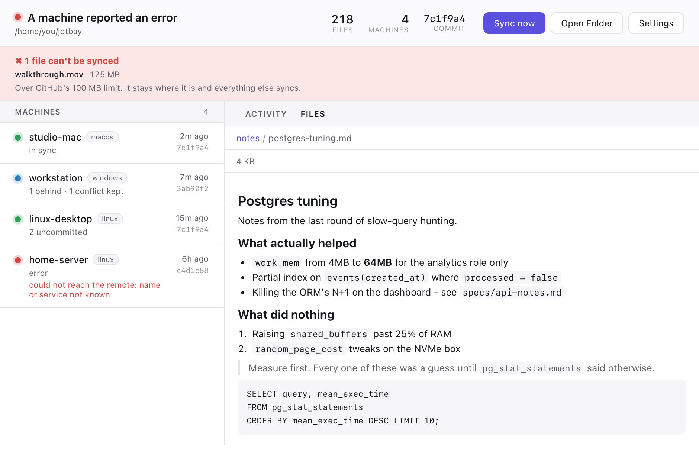
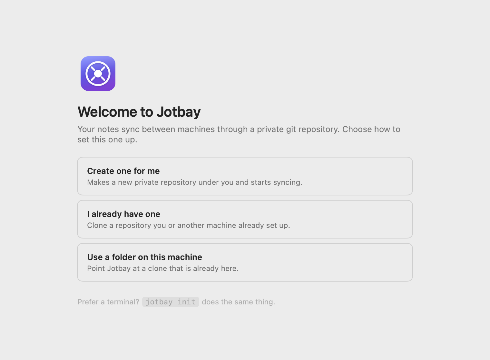
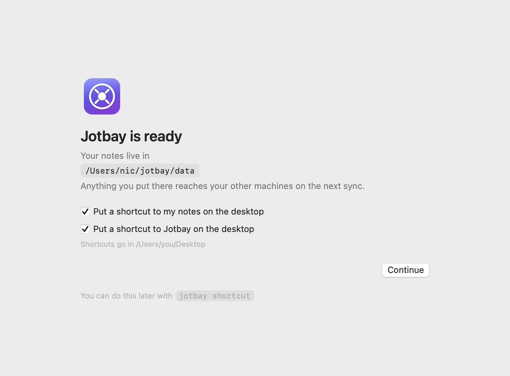

The note you need is always
on the other machine.
Jotbay keeps a folder of markdown in sync across your Macs, Windows and Linux machines, through a private git repository you own. No server, no account, and no telemetry. Nothing you wrote is ever discarded.
macOS 14+, Windows 10+, Linux. Free and open source, MIT.

Every machine reports in. The one that has been failing for six hours says so here, and in no commit log anywhere.
Three things, and nothing else.
Syncs a folder
Save a file and it is on your other machines seconds later. No button, no commit, no thinking about it. Any file type; markdown is the point.
Shows every machine
A menu bar or tray icon that changes when something needs attention, and an activity feed of what each machine actually did, including failing.
Keeps both versions
Edit the same note on two machines and the incoming copy keeps the filename; yours is saved beside it. Sync never stalls on a conflict, and no version is ever thrown away.
A closer look
Reading a note without leaving the app. The browser is read-only by construction. The commands to write anything don't exist.

The first launch asks one question: where should your notes live?
It can create the private repository for you, clone one you already have, or
adopt a folder that is already a clone. Prefer a terminal?
jotbay init does the same thing.


Install
Download
Grab the installer for your platform from the
latest release:
a notarized .dmg for macOS, -setup.exe for Windows,
.deb or .AppImage for Linux. Every installer includes
the command line tool.
The Windows installer is unsigned, so SmartScreen stops it: More info, then Run anyway. It needs no administrator rights. Why that happens.
Homebrew
brew install --cask nicglazkov/tap/jotbayTerminal
macOS and Linux:
curl -fsSL https://raw.githubusercontent.com/nicglazkov/jotbay/main/install/install.sh | bashWindows, in PowerShell. This is the recommended route until the build is signed. It needs no administrator rights:
irm https://raw.githubusercontent.com/nicglazkov/jotbay/main/install/install.ps1 -OutFile "$env:TEMP\jotbay-install.ps1"
powershell -ExecutionPolicy Bypass -File "$env:TEMP\jotbay-install.ps1"Questions you should ask
Where do my notes actually go?
To a git repository that you own, usually a private one on GitHub. GitLab, Codeberg, a self-hosted Forgejo or a bare repo over SSH all work. There is no Jotbay server, no account with anyone, and the tool phones nothing home. The one outbound request it makes on its own is checking its own releases page for updates, and you can point that elsewhere or block it.
What happens when two machines edit the same note?
Both versions are kept. The incoming one takes the filename; yours is saved
beside it as note.conflict-<machine>-<time>.md. A
conflict is something to tidy up later, not something that stops your sync.
Do I need to know git?
No. Setup asks where your notes should live and handles the rest; the word "commit" never appears in the interface. If you do know git, it's all real: a normal repository you can inspect, clone and script against.
What can the folder hold?
Any file type, handled byte-exactly. The practical limits are git's: anything at or over 100 MB is left uncommitted (GitHub would reject it) and flagged in the app until you deal with it, and large files you rewrite often will grow the repository permanently. Markdown, screenshots and PDFs are all comfortable; video belongs somewhere else.
How fast is "sync"?
Jotbay watches the folder and syncs about two seconds after you stop editing, so a note is usually on your other machines within ten seconds. It still isn't a real-time collaborative editor. It's built for notes that need to be on the next machine you sit at, not for two people typing in one document.
Why does Windows warn me about the installer?
Because it is not code-signed yet. Microsoft Defender SmartScreen stops unrecognized apps, and says "Windows protected your PC. Microsoft Defender SmartScreen prevented an unrecognized app from starting". At first the only button is Don't run; click More info and it shows Publisher: Unknown publisher with a Run anyway button. There is no browser warning and no elevation prompt, because Jotbay installs entirely under your own profile. Signing is coming. The macOS build is already signed and notarized.
For a day, this installer was also flagged as
Trojan:Win32/Wacatac.C!ml and quarantined outright. We withdrew
it rather than ask anyone to click past a malware warning. It turned out to be
a false positive in Defender's machine-learning model, which Microsoft
corrected in a definition update. The identical file, byte for byte, is clean
on current definitions. Nothing in the code was involved or changed. The
installer is back, and it is recorded here because a project that quietly
deletes its own incidents is not one worth trusting with your notes.
The command line
Everything the app shows, scriptable. The GUIs are front ends over the same engine. Nothing works differently in a terminal.
| jotbay | current state, local and across every machine |
| jotbay sync | commit, integrate the remote, push |
| jotbay dash | live dashboard in the terminal |
| jotbay activity | what every machine has done: syncs, conflicts, failures |
| jotbay init | set up a vault on a new machine |
| jotbay upgrade | fetch the current release and replace this machine's binaries |